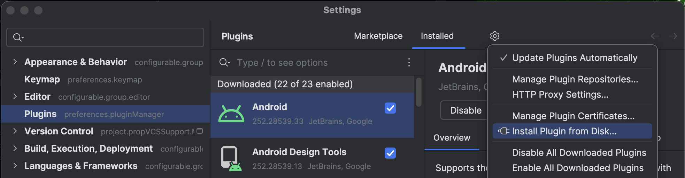
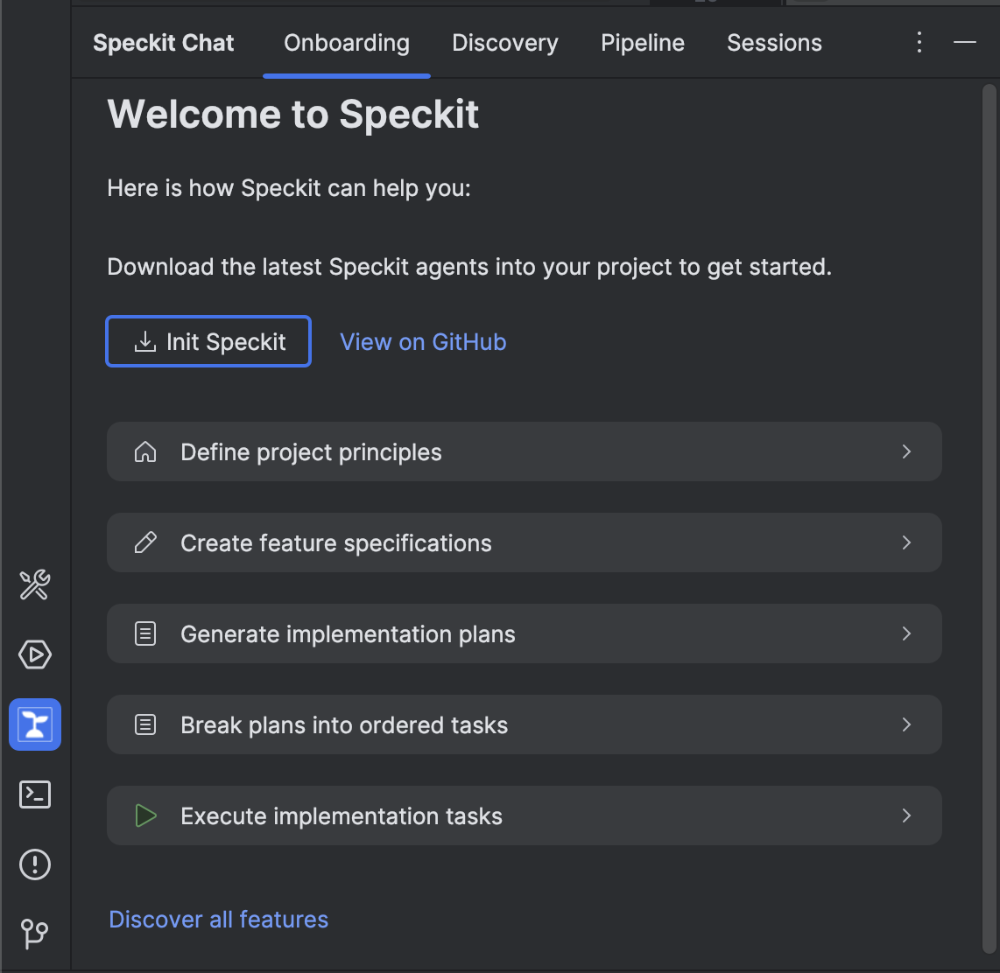

The Challenge
AI-assisted development is already happening on your team. The question is whether it is happening with the right guardrails in place.
What happens today
- Developers prompt AI directly with no structured requirements — the output may work, but nobody can trace it back to a documented decision
- Specs live in Confluence or Jira and go stale the moment coding starts — there is no feedback loop
- Inconsistencies between requirements, design, and code surface late, during review or QA, when rework is most expensive
- Engineering standards and architecture principles are enforced manually and unevenly across teams
What Speckit changes
- Every feature follows the same governed pipeline: specify, plan, validate, then implement — in that order
- Specs, plans, tasks, and checklists are versioned artifacts in the repo, not external documents that drift
- An automated analysis pass catches inconsistencies across all artifacts before a single line of code is generated
- A project constitution defines non-negotiable principles that every agent checks against — violations are flagged as critical
What You Gain
Confidence in AI Output
A project constitution encodes your engineering standards. Every agent — from planning to implementation — checks its work against those standards. Constitution violations are flagged as critical before code is generated, giving leadership assurance that AI output meets your bar.
Auditability
Every pipeline stage produces a versioned, in-repo artifact: specs, plans, data models, task lists, checklists, and analysis reports. You can trace any line of generated code back to the requirement that justified it — critical for regulated environments and architecture reviews.
Less Rework, Earlier Catches
Clarify finds requirement gaps before design starts. Analyze catches cross-artifact inconsistencies before coding. Checklists gate implementation until criteria are met. Defects found at the spec stage cost a fraction of defects found in code review or production.
Consistent Process at Scale
Every feature on every team follows the same pipeline. Agents hand off context automatically — no manual copy-pasting between documents, no steps skipped because someone was in a hurry. The process is encoded, not just documented.
How It Works
The pipeline moves a feature through four phases — Governance, Design, Validation, and Delivery — with each agent producing artifacts that feed the next.
Governance & Design
Establish project principles, capture requirements in a structured spec, resolve ambiguities, and produce a technical plan with data models and contracts.
Validation
Break the plan into dependency-ordered tasks, generate domain checklists that gate implementation, and run a 6-pass consistency analysis across all artifacts.
Delivery
Execute tasks phase-by-phase with TDD and checklist gating. Completed work is tracked in tasks.md. Convert final tasks into GitHub issues for team coordination.
What You Get
Four integrated views in the Speckit Chat tool window, each designed for a different stage of your workflow.
| Tab | Purpose | Key Actions |
|---|---|---|
| Onboarding | Guided introduction to each pipeline stage with an interactive demo | Init Speckit, explore features, try the pipeline |
| Discovery | Establish project properties and generate the governance constitution | Answer prompts, generate constitution.md |
| Pipeline | Validate artifacts and run each stage step-by-step per feature | Select feature, check prerequisites, run agents |
| Sessions | Direct agent execution with full control over arguments and tracking | Select agent, enter prompt, monitor runs |
1 Prerequisites
bash, curl, unzip. Windows: PowerShell 5+.2 Install the Plugin
Download the plugin ZIP
Open Plugin Settings
IntelliJ IDEA menu → Settings... (Cmd+, on macOS, Ctrl+Alt+S on Windows/Linux).

Install from Disk
Go to Plugins, click the gear icon (⚙) → Install Plugin from Disk...
Select the ZIP file
Navigate to the downloaded Speckit-Chat-0.1.0.zip and click Open.
Restart IntelliJ
Click Restart IDE. The Speckit Chat tool window appears in the bottom panel.
3 Initialize Your Project
Speckit needs agent definitions and templates in your repository. Initialization downloads the latest Spec-Kit release and sets up the required directory structure.
From the Onboarding Tab
- Open the Speckit Chat tool window
- Select the Onboarding tab
- Click Init Speckit
From the Sessions Tab
- Select the Sessions tab
- Click the … menu next to the send button
- Select Init Speckit
.github/agents/*.agent.md (9 agent definitions),
.github/prompts/*.prompt.md (slash command mappings), and
.specify/ (shell scripts, templates, memory).
All files are version-controlled with your project.
4 Your First Pipeline Run
The recommended starting point is to establish your project constitution, then specify your first feature.
Recommended Workflow
Establish governance
Open the Discovery tab, answer the project property questions,
and run the Constitution agent to generate constitution.md.
Specify a feature
In the Sessions tab, select the specify agent and describe your feature in natural language. Speckit creates a branch, feature directory, and structured spec.
Walk the pipeline
Open the Pipeline tab, select your feature, and run each step in order. Prerequisites are validated before each stage.
Monitor progress
The Sessions tab tracks every run with status, duration, branch, and session ID. Double-click a row to open that Copilot Chat session.
Agent Reference
| Agent | Purpose | Requires | Produces |
|---|---|---|---|
constitution | Define governance principles for all agents | User input | constitution.md |
specify | Transform a feature description into a structured spec | Feature description | spec.md, checklists/requirements.md, git branch |
clarify | Resolve underspecified areas through targeted questions | spec.md | Updated spec.md |
plan | Generate technical design with architecture and data models | spec.md, constitution.md | plan.md, research.md, data-model.md, contracts/ |
tasks | Break plan into dependency-ordered, phased task list | plan.md, spec.md | tasks.md |
checklist | Generate domain checklists that gate implementation | spec.md | checklists/[domain].md |
analyze | Read-only 6-pass consistency analysis across all artifacts | tasks.md, spec.md, plan.md, constitution.md | Findings report (read-only) |
implement | Execute tasks with TDD and checklist gating | tasks.md, plan.md, checklists | Source code, updated tasks.md |
taskstoissues | Convert tasks into GitHub issues for team coordination | tasks.md, GitHub remote | GitHub issues with labels and dependency links |
Customization
Override Bundled Agents
Place custom .agent.md files in .github/agents/.
Project-level files take priority over bundled defaults, allowing
teams to tailor agent behavior per repository.
Refresh Agents
Click the … menu in the Sessions tab and select Refresh Agents to reload definitions without restarting. Re-run Init Speckit to pull the latest upstream release.